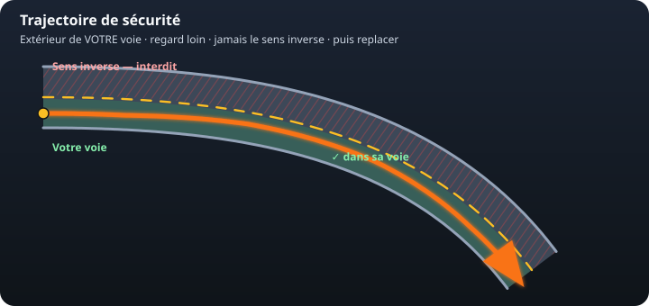
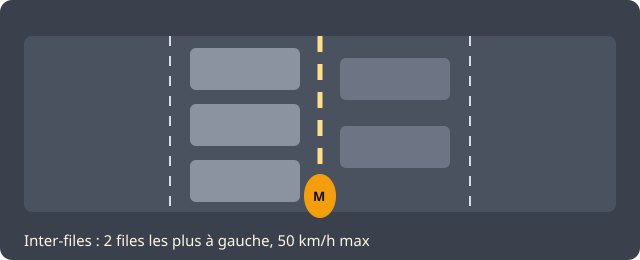
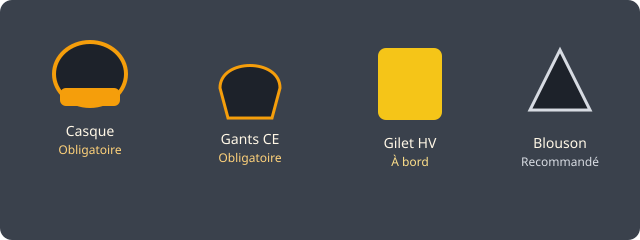
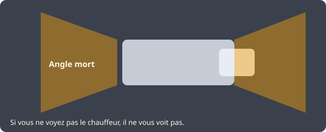

Spécificités deux-roues
Ce que le code voiture ne vous a pas appris
L'ETM existe depuis le 1er mars 2020 pour une raison : la moto n'est pas une voiture étroite. Voici les notions qui tombent souvent et qui sauvent réellement.
Trajectoire de sécurité

- Ralentir avant le virage. Freiner sur l'angle, c'est glisser.
- Se placer à l'extérieur de sa voie pour ouvrir le champ de vision.
- Regarder la sortie : le regard tire la moto.
- Se replacer sans couper la corde ni chevaucher la ligne médiane.
La moto n'a pas le droit d'emprunter le sens inverse, même « pour mieux voir ». La trajectoire de circuit (corde) est un piège d'examen et un risque de choc frontal. On reste dans sa voie.
Comprendre les trajectoires : le schéma corrigé, quand freiner, quand pencher, quand accélérer, et les dangers si on inverse les phases.
Circulation inter-files (depuis le 11 janvier 2025)

- Autoroutes et routes à chaussées séparées par un terre-plein, au moins 2 voies par sens, VMA 70 à 130 km/h (le périphérique parisien à 50 reste dans le cadre prévu par le décret).
- Circulation dense, files ininterrompues, véhicules à 50 km/h max.
- Entre les deux files les plus à gauche uniquement.
- 50 km/h max pour le motard, 30 km/h si une file est à l'arrêt.
- Largeur du 2 ou 3-roues ? 1 m. Pas de dépassement d'un autre deux-roues déjà en inter-files.
- On reprend une voie dès que ça fluidifie. Hors cadre = infraction (4e classe, 3 points).
Équipement : obligatoire vs recommandé

| Équipement | Statut | Repère |
|---|---|---|
| Casque homologué, attaché | Obligatoire (conducteur et passager) | ECE 22.06 / 22.05 - 4e classe, 3 points |
| Gants CE | Obligatoire (les deux) | EN 13594 - 3e classe, 1 point |
| Gilet haute visibilité | Obligatoire à bord, porté en arrêt d'urgence | EN ISO 20471 |
| Blouson, pantalon, bottes, dorsale, airbag | Recommandés | Pas d'amende code, mais protection majeure |
Visibilité et angles morts

Une moto occupe peu d'espace visuel. Feux allumés, couleur claire, placement décalé, jamais collé à un PL. On survit en supposant n'être pas vu.
Pièges d'adhérence typiquement moto
- Rails : les franchir le plus perpendiculairement possible, sans freiner dessus.
- Bandes blanches et plaques humides : patinoire.
- Gravillons / fraisage de travaux : moto droite, allure réduite.
- Gazole en station : arc-en-ciel au sol = on évite.
- Dos-d'âne : droit, pas en biais, pas freiné dessus.
Freinage
Le frein avant fournit l'essentiel de la puissance, l'arrière stabilise. On transfère les masses, regard loin, moto redressée pour l'urgence. L'ABS est un filet, pas une invitation à arriver trop vite. En descente : frein moteur, pressions brèves plutôt qu'un levier coincé.
125 avec le permis B, ou vrai permis moto ?
La formation 7 heures pour une 125 avec le permis B n'est pas l'ETM. Dès qu'on vise A1, A2 ou A (plateau + circulation), l'épreuve théorique moto est obligatoire. Les deux parcours n'ont pas d'équivalence.